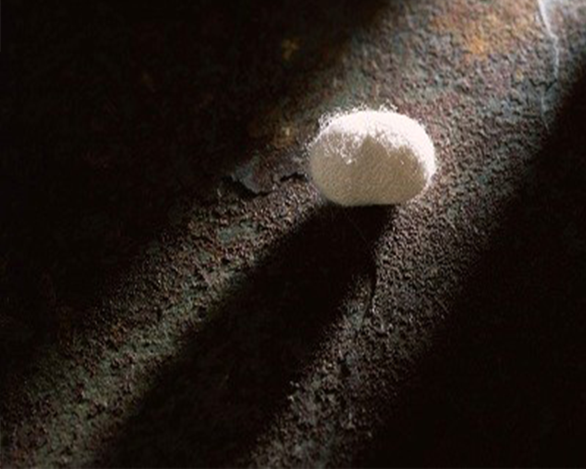

<html>

<head>
    <meta name="viewport" content="width=device-width, initial-scale=1.0">
    <!-- twitter 分享的標題 -->
    <meta name="twitter-title" content="《苦艾Wormwood》：得不到的救贖">
    <!-- twitter 分享的縮圖 -->
    <meta name="twitter:image" content="https://czx2110.github.io/The-third/brielle-big-image.jpg">
    <!-- twitter 分享的簡述 -->
    <meta name="twitter-description" content=" 時隔近50年後，Frank Olson終於拼湊出父親從旅館「跳樓」的真相，但真相似乎沒有帶給他救贖，為什麼？">
    <!-- facebook 分享的標題 -->
    <meta name="og-title" content="《苦艾Wormwood》：得不到的救贖">
    <meta data-react-helmet="true" property="og:description" content="時隔近50年後，Frank Olson終於拼湊出父親從旅館「跳樓」的真相，但真相似乎沒有帶給他救贖，為什麼？">
    <!-- facebook 分享的縮圖 -->
    <meta property="og:image" content="https://czx2110.github.io/The-third/brielle-big-image.jpg">
    <meta data-react-helmet="true" property="og:type" content="website">
    <!-- facebook 分享的簡述 -->
    <meta property="og:description" content="時隔近50年後，Frank Olson終於拼湊出父親從旅館「跳樓」的真相，但真相似乎沒有帶給他救贖，為什麼？">
    <meta property="og:type" content="website">
    <!-- 瀏覽器上的 tab 的縮圖 -->
    <link href="https://czx2110.github.io/The-third/brielle-big-image.jpg" rel="shortcut icon" />
    <link rel="stylesheet" type="text/css" href="briellestyle.css" />
    <link rel="stylesheet" type="text/css" href="https://cdnjs.cloudflare.com/ajax/libs/normalize/8.0.0/normalize.css" />

    <link rel="stylesheet" href="https://maxcdn.bootstrapcdn.com/bootstrap/4.0.0/css/bootstrap.min.css" integrity="sha384-Gn5384xqQ1aoWXA+058RXPxPg6fy4IWvTNh0E263XmFcJlSAwiGgFAW/dAiS6JXm"
        crossorigin="anonymous">
    <style>
        * {
            -webkit-box-sizing: border-box;
            -moz-box-sizing: border-box;
            box-sizing: border-box;
            font-family: 'Noto Sans TC', 'SourceHanSansTWHK', 'PingFang TC', 'Microsoft JhengHei', 'Apple LiGothic Medium', 'Roboto', 'Lucida Grande', 'Lucida Sans Unicode', 'sans-serif';
        }
        body {
    font-family: 'Noto Sans TC', 'SourceHanSansTWHK',  'PingFang TC','Microsoft JhengHei', 'Apple LiGothic Medium', 'Roboto', 'Lucida Grande', 'Lucida Sans Unicode', 'sans-serif';
    ;
    background-color: #ffffff;
}
    </style>
</head>

<body>

    <div class="card bg-dark text-white">

        

        <div class="card-img-overlay">
            <a class="clickable-menu"  href="https://czx2110.github.io/The-third/menu-1.html"></a>
            <div class="card-text" style=" margin:0px 10px">專題/電影筆記</div>
            <div class="card-title" style="margin:10px 0">《苦艾Wormwood》：得不到的救贖</div>
            <div class="card-text" style="margin:0 30px 0 0;
            position: absolute;
            left: 30;">Eric Olson試著從一套又一套不一致的說詞中找出一個合理的說法來解釋父親的神秘死亡，當他終於拼湊出父親從旅館「跳樓」的真相時，真相似乎沒有帶給他救贖。</div>
        </div>
    </div>
        
            <article>
        
                <!--intro text-->
                <P class=intro style="font-weight:500">
                        這不僅僅是一個控訴中情局說謊，質疑中情局各種以保護國家軍事機密為名而從事下藥暗殺等行動是否合理的紀錄片，
                        也不僅是紀錄一個面對父親離奇死亡的兒子如何在謊言中試圖拼湊出真相的故事，導演讓觀眾遊走於虛實之間，
                        以劇情片手法還原事件所有可能的樣貌，赤裸地呈現故事版本之間的不一致，並以紀錄片手法穿插事件關係人的說詞與報導，由觀眾自行決定最後要相信哪種說法，這是一部討論什麼能相信而什麼不能相信的故事。
                </P>
        
        
                <!--author's name & release date -->
                <header>
                    <div style="margin-top:15px">
                        <div class=author style="margin-left:0px">文／戴筱珺  圖／Netflix
                            </div>
                        </div>
                       
                        <div class=author>2018.06.28 </div>
                    </div>
                </header>
        
                <!--share icon-->
                <div>
                    <table>
                        <tbody>
                            <tr>
                                <td>
                                    <a target="_blank" href="https://www.addtoany.com/add_to/facebook?linkurl=https://czx2110.github.io/The-third/index_brielle.html">
                                        
                                    </a>
                                    <td>
                                        <a target="_blank" href="https://www.addtoany.com/add_to/twitter?linkurl==https://czx2110.github.io/The-third/index_brielle.html">
                                            
                                        </a>
                                    </td>
                                    <td>
                                        <a target="_blank" href="https://www.addtoany.com/add_to/line?linkurl==https://czx2110.github.io/The-third/index_brielle.html">
                                            
                                        </a>
                                    </td>
                            </tr>
                        </tbody>
                    </table>
                </div>
        
        
        
                <h2>矛盾故事的伏筆</h2>
                <p>
                     1953年，紐約Pennsylvania飯店十樓窗戶突然破裂，頓時弦樂聲激昂奏起，畫面中一名男子從窗戶飛出，以極度緩慢的速度向下墜落，男子面目猙獰地在空中揮動四肢，試圖抵擋地心引力，此時背景一個渾厚男聲緩緩唱著：

                </p>
            </br>
               <div class="quote">
                    ”No other love have I,
                    Only my love for you!
               </br>
                    Only the dream we knew,
                    No other love! 
                </br>
                    Watching the night go by,
                    Wishing that you could be,
                </br>
                    Watching the night with me,
                    Into the night I cry!”
                    
            </div>
               
            </br>
                <p>
                    這首歌是Perry Como演唱的”no other love”，來自當年在紐約上映的音樂劇”juliet and me”，”juliet and me”是一齣以劇院後台為背景的愛情喜劇，據說也是Frank Olson墜樓前看的最後一齣戲。然而，明明是恐怖的墜樓場景，導演卻故意配上訴說愛意與期盼愛人歸來的浪漫情歌，
                    兀自地將解釋為Frank Olson墜樓前腦中的旋律，或者是Eric Olson面對父親突然消失的心境，或是僅是導演為之後中情局的一連串矛盾說法的伏筆，三種說法似乎都說得通。
                </p>
              
        
                <figure>
                    
                </figure>
                <figcaption>來源/Netflix</figcaption>

                <h2>視而不見還是質疑一切？</h2>

                <p>當你隱約地知道事有蹊蹺，但說不出來是哪裡奇怪時，你會怎麼做？一種方法是視而不見，說服自己想太多，就像藍色茉莉裡面的Jasmine一樣"tends to look the other way"，這就是Alice Oslon採取的作法，
                當她聽說Frank Oslon跳樓或墜樓時，她開始酗酒，當第一份中情局文件解密時，Frank Oslon之死從原本跳樓自殺變成無意間喝下加了迷幻藥Lsd的酒後墜樓或跳樓身亡，面對官方檔案中互相不一致的說詞，
                Alice Oslon告訴Eric Oslon”你永遠無法得知那晚究竟發生了什麼事。“但事實是，她也不想知道，她無法承受比這個更糟的結果。</p>
                <p>反之，當九歲的Eric Oslon聽到父親Frank Oslon聽到父親跳樓或者墜樓意外身亡時，
                他想的是一個墜樓跳樓跟意外三個詞如何可能互相連結，如果是跳樓，怎麼可能是意外？如果是墜樓，如何躍過窗戶前的障礙物而失足？當第一份第一份中情局文件解密時，Oslon之死被認定為中情局計劃沒預料到的後果導致的意外死亡，
                Oslon家接受了總統的道歉與國會的賠償，但越深入讀當年的寇比檔案，Eric Oslon找出的矛盾就越多，他隱約感覺到有更嚴重的事情要掩蓋，但那時已經是Oslon死後22年後了，後來技術越趨發達，Eric跟家族律師決定第一次開棺驗屍，
                解剖結果與關係人的說法讓他相信父親是被中情局暗殺，而後再假裝成Frank Oslon自殺。
            </p>
            <!--<p>苦艾來自聖經的故事，苦艾讓海水變成，</p>-->
            <p style="margin-bottom: 30px">雖然Eric Oslon得到了他的答案，但一部分的他好像停在1953年，那時他開始愛上拼貼藝術，而一開始攝影工具是他父親中情局上司Vin給他的，很久之後他才知道拼貼藝術可以作為心理治療的一種療法，很久之後他才知道
                中情特別指示Vin要與Oslon家保持良好關係，Eric Oslon花了人生的一半時間去解開他父親死亡之謎，漸漸質疑主義也成為了他的一部份，畢竟一個解答總是領著他前往另一個問題，最終，日常生活好像離他很遠了。
                質疑一切跟視而不見，根本沒有哪個選擇比較好 對他而言，兩者都一樣苦澀。</p>
        
                
        
                <!--tags-->
                <div>
                    <a target="_blank" href="https://en.wikipedia.org/wiki/Frank_Olson">
                        <span>
                            <button type="button" class="tags btn btn-warning clickable" style="background-color: #FFE68D;
                border:#FFE68D;">#Frank Oslon</button>
                        </span>
                    </a>
                    <a target="_blank" href="https://wikispooks.com/wiki/US/Foreign_Assassinations_since_1945">
                        <span>
                            <button type="button" class="tags btn btn-warning clickable" style="background-color: #FFE68D;
                border:#FFE68D;">#中情局暗殺</button>
                        </span>
                    </a>
                    <a target="_blank" href="https://gushi.tw/%E5%A6%82%E4%BD%95%E8%AD%89%E6%98%8E%E6%88%91%E5%80%91%E7%9A%84%E4%B8%80%E7%94%9F%E4%B8%8D%E5%8F%AA%E6%98%AF%E5%A0%B4%E5%B9%BB%E5%A4%A2/">
                        <span>
                            <button type="button" class="tags btn btn-warning clickable" style="background-color: #FFE68D;
                border:#FFE68D;">#懷疑論</button>
                        </span>
                    </a>
                    <a target="_blank" href="">
                        <span>
                            <button type="button" class="tags btn btn-warning clickable" style="background-color: #FFE68D;
                border:#FFE68D;">#冷戰時期</button>
                        </span>
                    </a>
                </div>
        
        
                <!--author intro-->
                <!--<div class="author-box" style="margin-top:20px;margin-bottom:20px">
                    <a class="clickable-author" style="color:#FFFFFF" href="https://www.facebook.com/brielletai">
                        
                        <div>
                            <div style="font-size:18px"> 戴筱珺 </a> </div>
                    <div style="font-size:16px">政治大學哲學系四年級，政治大學哲學系四年級，政治大學哲學系四年級，政治大學哲學系四年級，
                    </div>
        
                    </div>
        
                </div>-->
                
                <a target="_blank" href="https://www.facebook.com/brielletai">
                    <div class="related-item clickable author-box" style="    margin-top: 20px; border: 0">
                        </img>
                        <div class="author-container">
                            <div>
                                戴筱珺
                            </div>
                            <div>
                                政治大學哲學系四年級。
                                </div>
                        </div>
                </a>
                </div>
                <!--further readings-->
                <div class=related-text>延伸閱讀</div>
                <a target="_blank" href="https://czx2110.github.io/The-third/index_cwy.html">
                    <div class="related-item clickable">
                        </img>
                        <div>延伸閱讀一：初探家庭電影</div>
                </a>
                </div>
                <a target="_blank" href="https://czx2110.github.io/The-third/index_czx.html">
                    <div class="related-item clickable">
                        </img>
                        <div>延伸閱讀二：春蠶豐收成災，蠶農血本無歸</div>
                </a>
                </div>
        
            </article>
        
            <footer>
                <!-- flex container -->
                <div class="flex-footer" style="margin-top:30px">
                    <!--4 flex items -->
                    <div>
                        <div class="footer-circle">
                            </img>
                        </div>
                        <div class="footer-text">關於我們</div>
                    </div>
                    <div>
                        <div class="footer-circle">
                            </img>
                        </div>
                        <div class="footer-text">聯絡我們</div>
                    </div>
                    <div>
                        <div class="footer-circle">
                            </img>
                        </div>
                        <div class="footer-text">訂閱</div>
                    </div>
                    <div>
                        <div class="footer-circle">
                            </img>
                        </div>
                        <div class="footer-text">找人才</div>
                    </div>
        
                </div>
            </footer>
        </body>
        
 

<!-- Hotjar Tracking Code for https://czx2110.github.io/the-third/index-brielle.html -->
<script>
    (function(h,o,t,j,a,r){
        h.hj=h.hj||function(){(h.hj.q=h.hj.q||[]).push(arguments)};
        h._hjSettings={hjid:931524,hjsv:6};
        a=o.getElementsByTagName('head')[0];
        r=o.createElement('script');r.async=1;
        r.src=t+h._hjSettings.hjid+j+h._hjSettings.hjsv;
        a.appendChild(r);
    })(window,document,'https://static.hotjar.com/c/hotjar-','.js?sv=');
</script>
  

   


</html>
